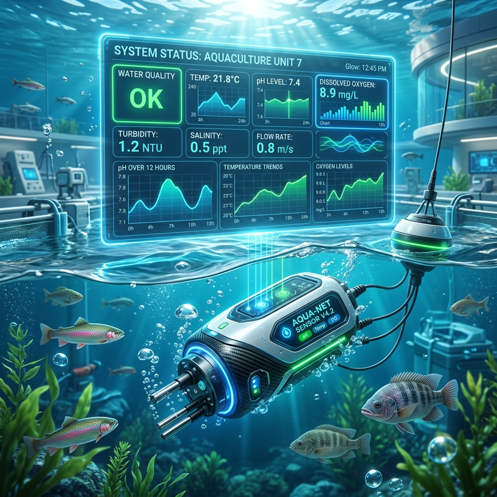
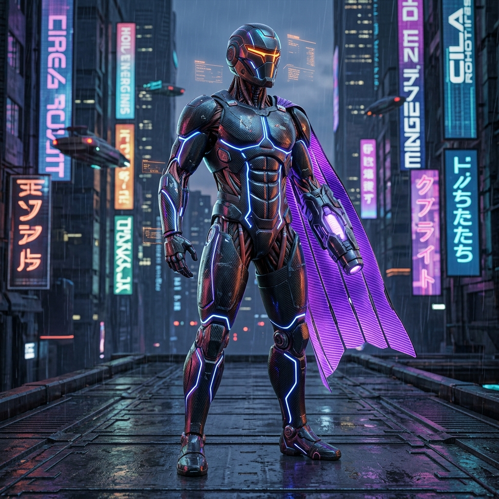

Felipe da Silva Ribeiro
Cloud Computing • DevOps • ADS Graduando Cloud Computing • DevOps • ADS Undergrad
Resumo Profissional Professional Summary
Cursando Análise e Desenvolvimento de Sistemas no IFPE, com conhecimentos em administração de sistemas Linux e Windows e experiência prática em nuvem (AWS). Participei de projetos de inovação acadêmica aplicando automação com IoT para detecção de parâmetros ecológicos da água em piscicultura familiar. Possuo interesse e foco dedicados a infraestrutura em nuvem, análise de dados e automação. Busco minha primeira oportunidade profissional em tecnologia, onde possa aplicar minhas qualificações técnicas, evoluir estrategicamente e agregar valor a projetos inovadores.
Currently pursuing an Associate's Degree in Systems Analysis and Development at IFPE, backed by knowledge in Windows and Linux server environments and hands-on Cloud experience with AWS. Contributed to academic innovation projects utilizing IoT automation to detect environmental parameters in aquaculture systems. My primary focus lies in Cloud Infrastructure, Data Analysis, and DevOps pipelines. I am actively seeking my first tech role to leverage my technical foundation, expand my skill set, and add business value to forward-thinking projects.
Competências Técnicas & Comportamentais Technical & Soft Skills
Clique nos botões de filtro para explorar as tecnologias que utilizo. Click on the filter tabs to explore the technologies and skills I specialize in.
Cloud Computing
Serviços e conceitos básicos de infraestrutura virtualizada em nuvem.
Cloud virtualization concepts and multi-region infrastructure setups.
Serviços AWS
Provisionamento de capacidade computacional, armazenamento e bases de dados gerenciadas.
Provisioning scalable computing power, block storage, and managed databases.
Segurança na Nuvem
Administração de acesso, políticas de privilégio mínimo e criptografia de dados.
Identity access management, least privilege policies, and data encryption.
DevOps & Pipelines
Automação de fluxos de deploy e entrega contínua integrados na AWS.
Automation of deployment workflows and continuous delivery integrated into AWS.
Infraestrutura como Código
Modelagem de recursos e automação declarativa de ambientes em nuvem.
Declaring infrastructure blueprints and automation of multi-tier environments.
Networking & Redes
Isolamento de sub-redes, balanceamento de tráfego e regras de acesso de tráfego.
Subnet isolation, route tables, load balancing, and firewall rule setups.
Monitoramento & Custos
Monitoramento operacional de desempenho e otimização de faturamento de recursos.
Operational health tracking, log analytics, and spending optimization.
Desenvolvimento & Banco
Scripts de automação, manipulação de bases relacionais e data warehousing.
Automation scripting, relational database queries, and data warehousing.
Inteligência Artificial
Integração de serviços pré-treinados de IA e pipeline no SageMaker.
Integrating pre-trained computer vision and NLP models, and SageMaker pipelines.
Trabalho & ColaboraçãoCollaboration
Integração e articulação ágil com times multifuncionais focada em metas.
Integrating into cross-functional agile teams to exceed shared product milestones.
Pensamento & ResoluçãoAnalytical Thinking
Foco analítico em debugar problemas complexos e implementar soluções ágeis.
Analytical approach to troubleshooting complex issues and building resilient designs.
Entrega & ResiliênciaExecution & Delivery
Adaptação ágil a mudanças tecnológicas focando em prazos e qualidade.
Adapting swiftly to technical updates while sustaining top-tier delivery standards.
Experiência Profissional Professional Experience
Estagiário de TI IT Intern
Prefeitura de Igarassu
- Desenvolvimento, manutenção e otimização de sistemas internos de suporte governamental.
- Suporte técnico a usuários finais, resolvendo chamados técnicos e bugs de hardware e infraestrutura básica.
- Colaboração direta com equipes integradas no planejamento e implementação de novos projetos digitais.
- Developed, maintained, and optimized governmental internal web structures and utility systems.
- Delivered end-user technical support, troubleshooting hardware, software configurations, and basic network issues.
- Collaborated closely in cross-functional squads to roll out new public sector digital services.
Formação Acadêmica Academic Background
Tecnologia em Análise e Desenvolvimento de Sistemas Associate Degree in Systems Analysis & Development
IFPE - Instituto Federal de Pernambuco
Foco em engenharia de software, banco de dados, arquiteturas cliente/servidor e automação de sistemas.
Core studies in Software Engineering, Databases, Client/Server Architectures, and System Automation.
Ensino Médio High School Diploma
EREM Maria Vieira Muliterno
Escola de Referência em Ensino Médio.
State Reference School program focusing on science and computing foundations.
Projetos & Experiências Relevantes Key Projects & Portfolios
Desenvolvimento sustentável, automação de dados e ativos gráficos em 3D. Sustainable developments, digital automation, and 3D graphic asset pipelines.
Premium Food Market Premium Food Market
Active Development / Production ReadyMercado virtual completo composto por loja cliente responsiva, dashboard de administração com métricas de estoque e vendas em tempo real, integrado com banco de dados Supabase e deploy Vercel.
Full-featured online marketplace featuring responsive store front, administrative dashboard for inventory and sales tracking, integrated with Supabase DB schema and Vercel deploys.
Rei do Bolo Chatbot Rei do Bolo Chatbot
Customer Service Bot SystemChatbot corporativo inteligente voltado ao autoatendimento ao cliente e suporte operacional. Desenvolvido em JavaScript estruturado, testado com módulos ES6 para validação de modelos generativos.
Intelligent corporate customer support chatbot system. Engineered using structured JavaScript, integrated and verified with ES6 modular testing routines for generative models.

Monitoramento IoT de Qualidade da Água IoT Water Quality Telemetry
Jan/2024 – Dez/2024Desenvolvimento de sistema de telemetria automatizada em piscicultura familiar. Integração de sensores analógicos de pH, temperatura e turbidez conectados a microcontroladores, transmitindo dados em tempo real.
Developed automated water telemetry for family aquaculture. Integrated digital sensors measuring pH, temp, and turbidity levels using microcontrollers to send live stats to analytical dashboards.
Copefruta API OSM & Automations Copefruta API OSM & Automations
Python Geolocation Desktop SuiteSoftware de integração com OpenStreetMap e serviços REST para análise geográfica de rotas. Equipado com scripts automatizados em PowerShell para empacotamento executável (.EXE) e ambiente virtual isolado.
Desktop suite integrating OpenStreetMap and REST services for geospatial route planning. Features custom PowerShell build pipelines to compile binary distributions (.EXE) from python code.
Bolo Delícia Label Bolo Delícia Label
Graphic Generator ToolAplicação web dedicada ao design, parametrização e exportação de rótulos e etiquetas de embalagens de bolos tradicionais e premium, otimizada para impressões térmicas de alta qualidade.
Web application engineered for customizable drafting, rendering, and dynamic exporting of packaging labels for traditional and premium cake products, tailored for clean thermal printing.

Modelagem 3D & Asset Creation 3D Character & Asset Design
Jan/2025 – Mar/2025Modelagem de personagens realistas e cenários digitais interativos no Daz Studio. Foco em produção de assets otimizados para simulações e renderização avançada com iluminação de estúdio física.
Created photorealistic character concepts and environmental virtual assets in Daz Studio. Textured, mapped, and configured realistic physical lighting nodes, generating game assets.
Boomikids Portal Boomikids Portal
Interactive Frontend ProjectPortal web educacional responsivo e lúdico para o público infantil. Construído com layouts fluidos, cores alegres e micro-interações para garantir uma experiência de navegação segura e engajante.
Responsive and playful educational web portal designed for children. Engineered with fluid layouts, vibrant color configurations, and micro-interactions securing a safe and engaging UX.
Chronus Time Manager Chronus Time Manager
Interactive Web Productivity ToolDashboard de produtividade pessoal e controle operacional de rotinas. Possibilita cronometragem e categorização de atividades de desenvolvimento com persistência local de dados.
Productivity tracker dashboard for operations management. Enables real-time stopwatch logging and category mapping of developer tasks with local data storage persistence.
Lar das Delícias Lar das Delícias
Active Production SitePlataforma web gastronômica voltada à apresentação, catálogo digital e captação de pedidos de doces e salgados artesanais, com interface responsiva de alta conversão.
Gastronomic web application built for digital cataloging, showcasing, and order capture of artisanal pastries and savory products, featuring a highly-optimized responsive conversion UI.
Produção Científica & Pesquisa Acadêmica Scientific Production & Academic Research
Pesquisa & Iniciação Científica Research & Scientific Initiation
Programa de Iniciação Científica (IC) - UFRPE
Pesquisador bolsista em herpetologia, com foco em ecologia, monitoramento microambiental e análise estatística de parâmetros ecológicos.
Undergraduate research fellow in herpetology, focusing on ecology, microenvironmental tracking, and ecological statistical analysis.
Artigos Completos Publicados em Periódicos Complete Journal Articles Published
1. OITAVEN, L. P. C.; Ribeiro., S.R ; de Moura, G.J.B ; Oliveira., J.B. Parasites of Gymnodactylus darwinii Gray, 1845 (Squamata, Phyllodactylidae) from an Atlantic Rainforest fragment. ACTA TROPICA, v. 192, p. 123-128, 2019.
2. OITAVEN, L. P. C.; Ribeiro., S.R ; RIBEIRO, L. B. ; de Moura, G.J.B. Gymnodactylus darwinii (Darwin's Gecko). Eggs and Hatchlings. HERPETOLOGICAL REVIEW, v. 50, p. 140-141, 2019.
3. OITAVEN, L. P. C.; de Moura, G. J. B. ; RIBEIRO, F. S. ; LISBOA, E. B. F. ; OLIVEIRA, J. B. Nematodes of Amphisbaena vermicularis Wagler, 1824 (Squamata, Amphisbaenidae) from Brazilian Atlantic Forest remnants. JOURNAL OF NATURAL HISTORY, v. 55, p. 1227-1236, 2021.
Capítulos de Livros Publicados Published Book Chapters
OITAVEN, L. P. C.; Melo., V.L ; FREITAS, M. A. ; Gomes., C.F.C.A ; Ferreira., A.P.S ; Ribeiro., S.R ; Pereira., M.G ; Lima., E.L.C ; Oliveira., J.B ; de Moura, G.J.B. As Serpentes da Ilha de Paulo Afonso- Bahia, Nordeste do Brasil. In: Vertebrados Terrestres da Ilha de Paulo Afonso... 1ed. Recife: EDUFRPE, 2017, v. 1, p. 159-192.
Apresentações & Congressos (Anais) Conference Annals & Presentations
XI Congreso Latinoamericano de Herpetología (Quito, 2017):
• Dieta de Gymnodactylus darwinii (Gray, 1845) (Squamata, Phyllodactylidae) em remanescente de Mata Atlântica no Nordeste do Brasil. (Apresentação Oral).
• Especificidade microambiental de Gymnodactylus darwinii em remanescente de Mata Atlântica no Nordeste do Brasil. (Apresentação Oral).
Cursos & Certificações Courses & Certifications
OIAGRO - Olimpíada de Inovação do Agronegócio (48h)
IFRJ / CNPq • Equipe 85 | MONITORE+ • 2024
Ver CertificadoXII Mostra de Extensão do IFPE
IFPE - Campus Paulista • "Qualidade da água para criação de tilápias" • 2024
Ver CertificadoAWS Certified Cloud Practitioner
Amazon Web Services (AWS) • Validação:Validation: b437c158e4b644ad8b939f7823aa4e3
Programa AWS re/Start & Inteligência Artificial (363h)AWS re/Start & Artificial Intelligence Program (363h)
Escola da Nuvem • Concluído: 19/08/2025Completed: 19/08/2025
Ver CertificadoView CertificateAWS Certified Developer
Escola da Nuvem
Fundamentos de Cloud e AWSCloud Computing & AWS Foundations
Escola da Nuvem
IoT e Automação para Monitoramento AmbientalIoT & Automation for Environmental Tracking
IFPE
Auxiliar de Laboratório de Microbiologia (162h)Microbiology Laboratory Assistant (162h)
SENAI Paulista • Concluído: 27/03/2023Completed: 27/03/2023
Ver CertificadoView CertificateInformações Adicionais Additional Details
Disponibilidade de TrabalhoWork Arrangements
Total flexibilidade para atuar de forma Presencial (São Paulo/SP), Híbrida ou Remota.
Completely open to On-Site (São Paulo, Brazil), Hybrid, or Remote opportunities.
Áreas de Maior InteresseTarget Focus Fields
Cloud Engineering, DevOps Pipelines, Data Engineering, IoT Systems.
Engajamento ComunitárioCommunity Engagement
Participação contínua em eventos acadêmicos, fóruns de DevOps e maratonas técnicas.
Active presence in academic seminars, open-source DevOps threads, and tech hackathons.
Foco em SustentabilidadeSustainability Focused
Pesquisa aplicada no cruzamento entre tecnologias digitais emergentes e impacto ecológico sustentável.
Researching sustainable ways to deploy scalable, high-performance tech to reduce carbon footprints.